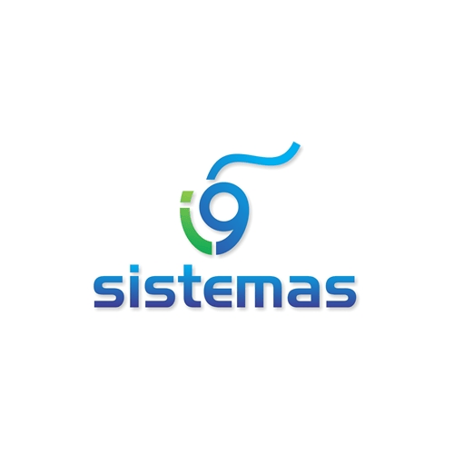

Mi nombre es Santiago Perdomo Delgado, egresado de la Institución Rodrigo Lara Bonilla, "Megacolegio" A continuación les presento mi portafolio. En este portafolio podrán observar mis trabajos de Diseño Gráfico y experiencias de sistemas durante todo el año de 2021-2023, El diseño no solo es un adorno, es un proceso de creación visual con un propósito el cual es comunicar un mensaje específico; para hacerlo de la manera correcta, el diseñador debe buscar la mejor forma para que ese mensaje sea conformado, fabricado, distribuido, usado y relacionado con su ambiente.Vivo en la ciudad de Neiva de una familia humilde y cariñosa,no hay duda de que se necesita talento para el diseño gráfico y programador . Pero no tienes que obtener un título para adquirir las habilidades necesarias para crear diseños increíbles para tus redes sociales, publicaciones de blog o para casi cualquier proyecto. Solo tienes que seguir algunas de las mejores prácticas en sistemas y diseño.
 Sistemas
 Diseño Grafico
Diseño Grafico